3D Surface with Point Label
3D-Surface-PointLabel
Summary
This tutorial will demonstrate how to add a 3D Scatter to a 3D Surface and include labels as shown below:
-
- 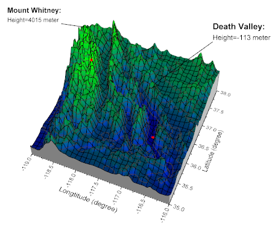
Minimum Origin Version Required: Origin 2015 SR0
What you will learn
This tutorial will teach you how to:
- Create the 3D Surface with side walls
- Add a 3D scatter to the 3D Surface and include labels
- Change the label position in 3D graphs
- Add a line to connect the symbol and the label
Steps
Create the 3D Surface with side walls:
This tutorial is associated with <Origin EXE Folder>\Samples\Tutorial Data.opj.
Also, you can refer to this graph in Learning Center. (Select Help: Learning Center menu or press F11 key , and then open Graph Sample: 3D Surface)
- Open Tutorial Data.opj and browse to the 3D Surface with Point Label folder in Project Explorer (PE).
- Activate MBook4, and highlight everything. Select Plot > 3D : 3D Colormap Surface from the main menu. A 3D Colormap graph will be generated as shown below:

- Select Format: Axes: Z Axis... in the menu to open the Axes dialog. (Or double-click one of the axes on the graph). Set Z axis scale From: -500 and To: 8000. Click OK.
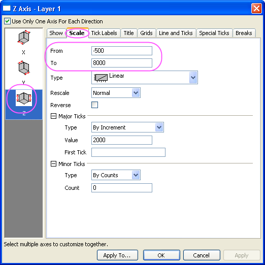
- Select Format: Plot in the menu to open the Plot Details dialog. (Or double click anywhere on the graph). If the left panel is not expanded use the 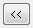 button on the bottom left of the dialog to expand it and select the first option under Layer1. In order to create and customize side walls, in the Side Walls tab, check the Enable box. Change the color of X and Y side walls to Gray and LT Gray.
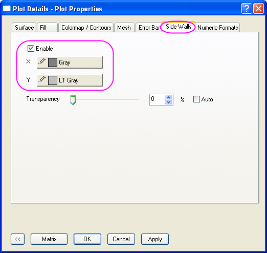
- To adjust the color scale, in the Colormap/Contour tab, click on the Fill column header to open the dialog. Select the Limited Mixing option, and set From: Blue and To: Green as shown below. Click the OK button to close the Fill dialog.
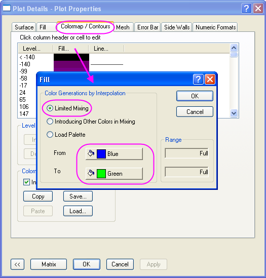
- In the Mesh tab, select color of Major Minor Lines as Black and select apply Apply.
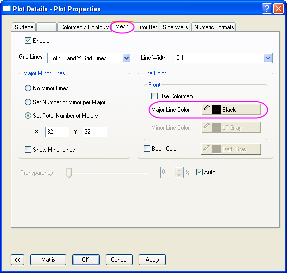
- The next step is to add and customize the lighting effect. In the same Plot Details dialog, expand the left panel and select Layer 1. In the Lighting tab, choose the Directional Mode, enter 279 and -3 in the Horizontal and Vertical boxes respectively. Set the Ambient color to LT Yellow.
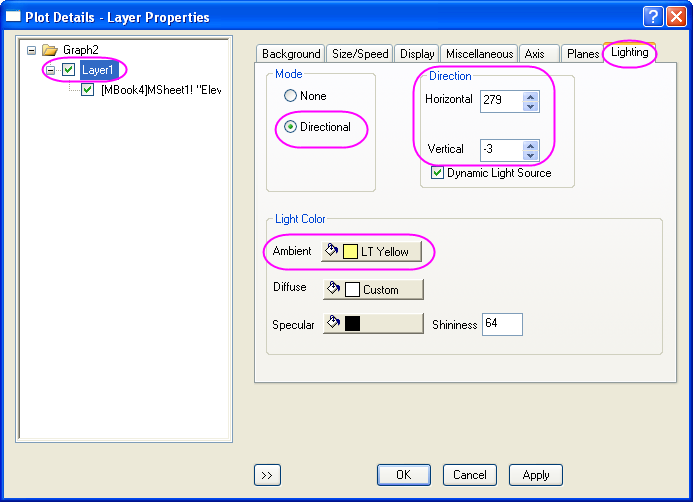
- To adjust the planes, in the Planes tab deselect the YZ and ZX boxes to hide the two planes in the graph. Click the OK button.
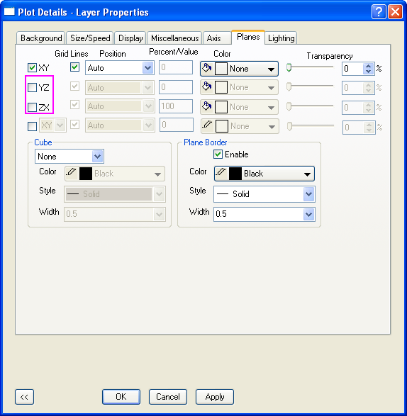
Add the 3D scatter in the 3D Surface with labels:
- In order to add symbols in the desired position on the 3D graph, select Graph: Layer Contents from the main menu to open the Layer Contents dialog (Or double click on the layer icon 1 on the top left of the graph). In the dialog that appears, select Worksheet in Folder from the drop-down on the top left.
- Click on the Plot Type button shown below to specify 3D Scatter/ Trajectory/ Vector as the plot type:
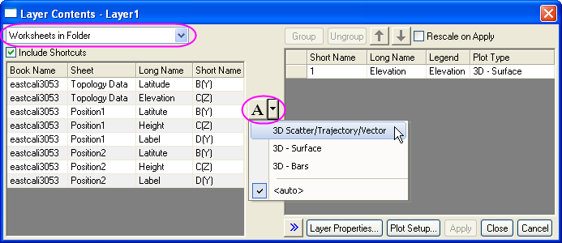
- To shift components from the left panel to the right panel, holding down the Ctrl key, select two Height columns in the left panel and click on the Add plot button
 . This will add the two columns to Layer1. Click the OK button.
. This will add the two columns to Layer1. Click the OK button.
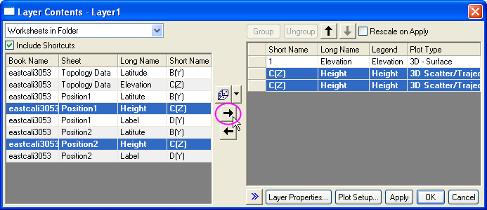
Use the  Rotate Tool button on the Tools toolbar or hold down the R key and use the mouse to rotate the graph. You can find two red symbols are added to the 3D surface and the graph will appear as shown below:
Rotate Tool button on the Tools toolbar or hold down the R key and use the mouse to rotate the graph. You can find two red symbols are added to the 3D surface and the graph will appear as shown below:

- To add labels and leader lines to the two symbols, double click on either one to open the Plot Details dialog. Make sure the left panel of the Plot Details dialog box is expanded and displaying Original under the Position1 plot-level. In the Label tab check the Enable box. In the Label From drop-down list, select col("Label") as the label source. Specify the Offset, Position and Leader Line for the label as shown in the image below:
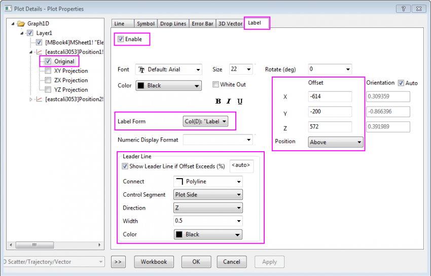
- In the left panel, click on Original under the Position2 plot-level. In the Label tab repeat the above step making the selections given below.
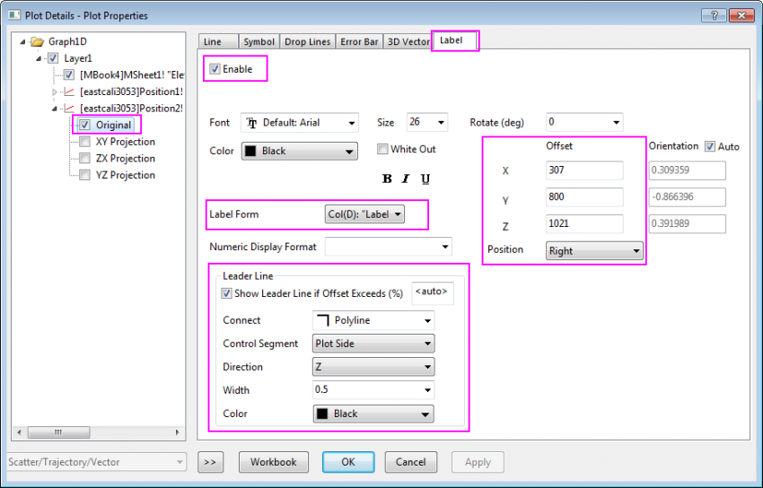
Click on the OK Button. Labels and Lead Lines should now appear on the graph.